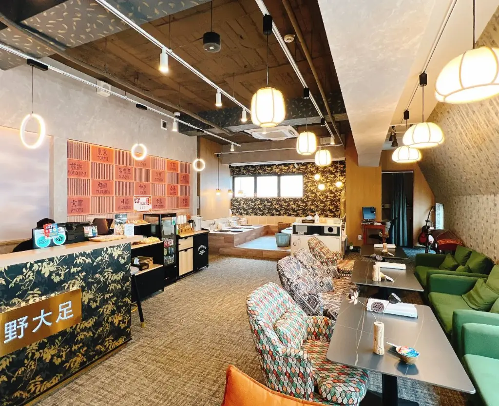
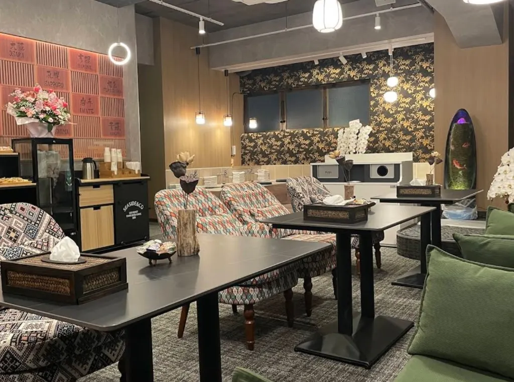
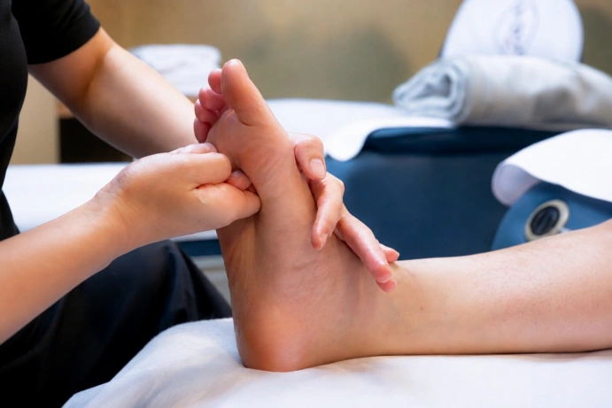
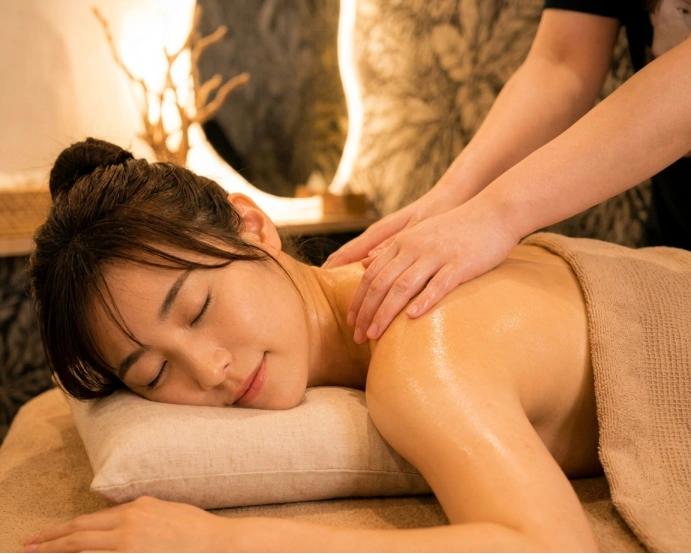
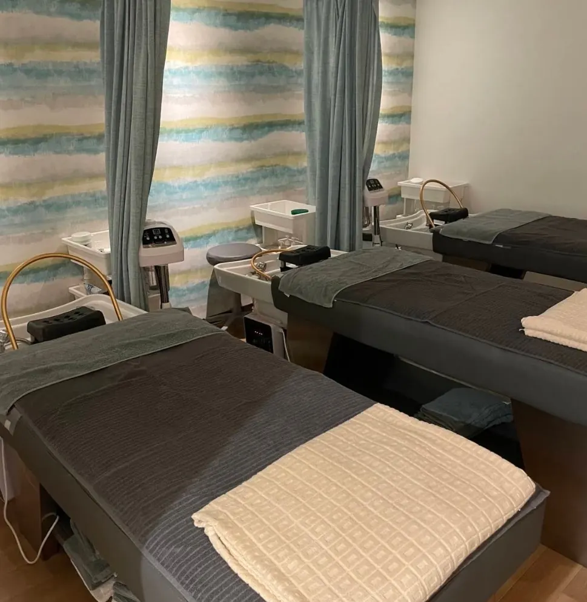
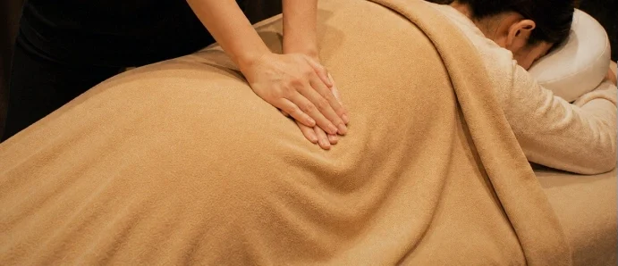
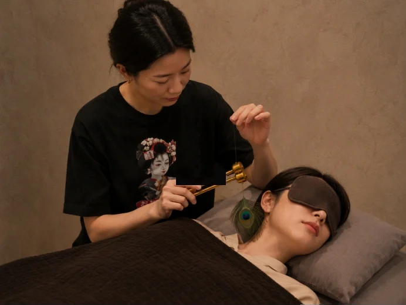

Popular & Special Offers
Staff picks
Massage & Spa, about 1 min from JR Okachimachi North Exit
Open daily: Sun–Thu 11:00–2:00 · Fri–Sat 11:00–5:00
10 single rooms, 2 pair rooms and 9 foot chairs — groups up to 23
English-speaking staff — a favorite with visitors from the West
Doctor Fish · Body Massage・Aromatherapy Oil Massage · Foot Reflexology · Balinese Head Spa
Complimentary drinks & snacks throughout your visit
Minutes from Ueno Park, Ameyoko, Akihabara and Asakusa
About
BIG FOOT SPA is one of Tokyo's few large-scale, full-service massage spas, located in Ueno–Okachimachi. We offer Japanese・Taiwanese-style body massage, foot reflexology, aroma oil massage, Doctor Fish, Balinese head spa and facial treatments in a calm, comfortable space with private treatment rooms and rooms for couples and groups. Just landed and shaking off flight fatigue? Worn out after a day of sightseeing? Want one last treat before heading home? BIG FOOT SPA is the perfect place to unwind — on your own, or together with friends and family.

9 foot chairs, 2 pair rooms, and 10 single-person rooms — comfortable for solo visits or groups of up to 23.
About 1 min walk from JR Okachimachi North Exit. Ueno Park, Ameyoko and Akihabara are nearby.
Rated with perfect scores on Google and Tripadvisor. Support is available in Japanese, English and Chinese, with menus in Japanese, English, Traditional Chinese and Korean.
All prices include tax. Foot courses start at 40 minutes and include a ceramic foot bath and the calves. Aroma oil massage is performed by female therapists — male guests can request a male therapist, based on availability.









Spacious lounge with complimentary drinks and snacks, 10 single rooms, 2 pair rooms and 9 foot chairs. A relaxing retreat for travelers looking to unwind and recharge after sightseeing in Tokyo.
About 1 min walk from JR Okachimachi Station North Exit; about 1 min from Tokyo Metro Ginza Line Ueno-hirokoji Exit A2; about 5 min from JR Ueno Station Shinobazu Exit.
Ueno Park, Ameyoko, Akihabara and Asakusa are all a short trip away.
Sun–Thu 11:00–2:00／Fri–Sat 11:00–5:00 (last reception 1:00 / 4:00)
On site: Japanese, English, Chinese. Printed menus also in Traditional Chinese and Korean.